The previous day ended with four maps a network can predict to separate touching cells. Today the fourth one in full: flow fields, the representation of the Cellpose family of networks (Stringer et al., 2021).
The training target: heat spread inside each cell, and arrows that point uphill.
What the network predicts: two arrow components and a cell probability per pixel.
Decoding: every pixel follows the arrows; pixels that meet at the same sink form one cell.
The flow check: drop masks whose arrows do not look like the arrows of a cell.
The cell diameter: why the image is rescaled, and what a wrong diameter does.
What goes wrong, on simulated arrows and on the real network in the browser.
Slides titled The math give the formulas and proofs; the ideas are complete without them.
For every cell pixel the network predicts a small arrow.
Inside each cell the arrows lead, along a path inside the cell, to one point.
Follow the arrows from every pixel: pixels that end at the same point belong to the same cell.
This follows bends: a C-shaped or bent cell is no problem.
Today: where the arrows come from, how they are followed, and what decides how many cells come out.
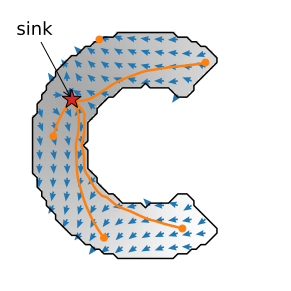
Try it: flows on many cells (simulated)
The training target, step by step
Put heat at the cell’s centre and let it spread inside the cell only, as on the heat-equation day: repeatedly replace every pixel by the average of itself and its neighbours that belong to the cell.
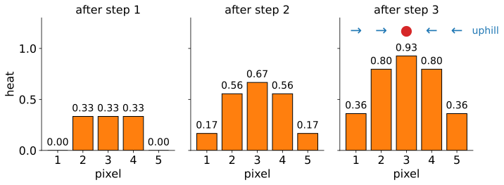
5 pixels, source at pixel 3. Each step: add 1 at the source, then average over the in-cell neighbours (the end pixels have only one neighbour inside).
After 3 steps: (0.36, 0.80, 0.93, 0.80, 0.36). The arrows point uphill: →, →, sink, ←, ←.
Arrow = direction of the heat difference between the two neighbours, length 1: only the direction matters.
Heat in a C-shaped cell
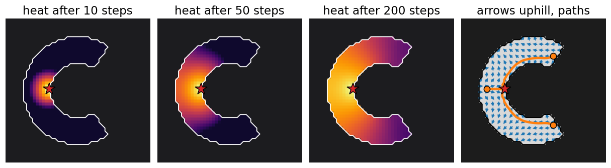
The source: the cell pixel nearest the median of the cell’s x and y coordinates (for a C, on its back, not in the hole).
The heat creeps along the arms; it needs about as many steps as the longest path in the cell to reach the tips (here about 23). The training target uses 2 × (width + height) of the cell’s box: 128 steps here.
The arrows follow the arc, because heat only travels inside the cell.
Why heat, not straight lines to the centre?
Why not let every arrow point straight at the centre?
In a C-shape the straight line from a tip to the centre crosses the hole: following it would leave the cell (74 of 101 points on that line lie outside).
That is the star-convex limitation of the previous unit in another guise: straight rays need a star-shaped cell.
Heat spreads only through the cell, so “uphill” bends around corners: the path from the tip follows the arc and arrives in 24 steps.
One word of warning: this “diffusion” is the heat equation (a PDE), not the generative “diffusion models” of a later day.
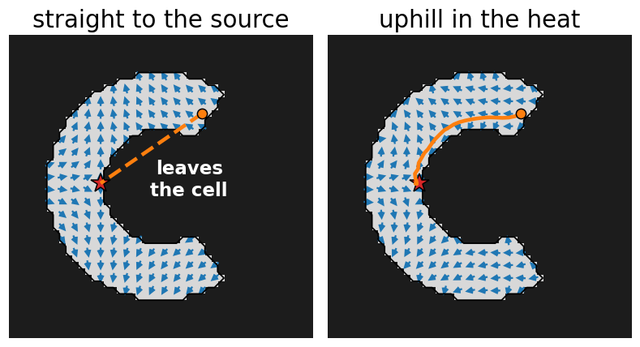
The math: the heat target
For a cell O with source c, the heat h solves the heat equation with a source, and no flow across the border:
\partial_t h = \Delta h + \delta_c \ \text{ in } O, \qquad \partial_n h = 0 \ \text{ on } \partial O .
Discretely (recall the heat-equation day): h(p) \leftarrow \operatorname{mean}_{q \in N(p) \cap O} h(q), after adding 1 at c; N(p) is the 3 \times 3 neighbourhood. Averaging only over in-cell neighbours is the no-flux condition.
The arrows are the normalised gradient\mathbf v = \nabla h / \|\nabla h\|, with central differences \partial_x h \approx h(x+1, y) - h(x-1, y) (0 outside the cell).
While heat is fed in at c, a pixel away from the source is at most the mean of its in-cell neighbourhood (discrete subharmonic; the 8 neighbours of c are the exception, but c itself is warmer). So (maximum principle) every pixel except c has a warmer neighbour: one maximum, one sink per cell (exercise B8).
Practical versions use \log(1 + h) before the gradient: same direction, better-scaled differences far from the source.
Try it: heat and arrows
What the network predicts
A U-Net (the U-Net unit of the neural networks day) with three output channels per pixel:
two arrow components (left–right, up–down): shown as a colour (hue = direction, brightness = length);
a cell probability (as a logit; above the threshold = “inside a cell”).
Trained on images with hand-drawn masks: the targets are the heat arrows of each mask, so the network learns to predict them from the image alone.
Every cell becomes a small colour wheel: each colour points to the cell’s centre.
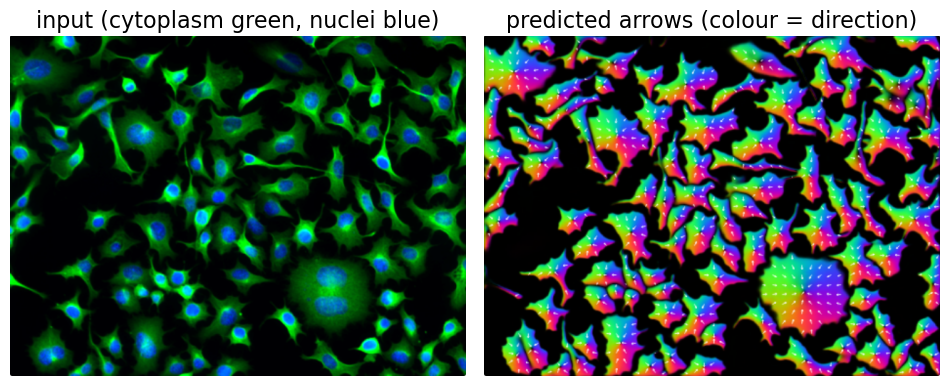
Image: Cellpose demo images (cellpose.org), BSD-3-Clause; the real network running in the browser.
Decoding: follow the arrows
Every pixel with cell probability above the threshold is a particle.
Each particle moves one pixel along the arrow at its position (interpolated between pixels), again and again: a fixed number of steps (default 200 for cells of 30 pixels, scaled with the diameter).
Particles gather at sinks. Count the end points per pixel (a histogram); its local peaks with more than 10 particles are the seeds.
Each seed region collects the pixels whose particle arrived there: one mask per sink.
No threshold on a distance, no markers to tune: the arrows do the grouping.
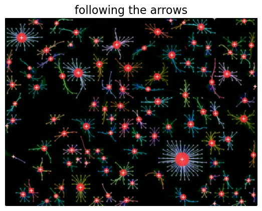
By hand on a grid
A 5 \times 5 field, one cell per step (· = no movement):
From (4, 0): → (3, 1) → (2, 1) → (2, 2), and stays: the sink in the middle.
From (3, 3): → (4, 4), and stays: a second sink.
From (0, 0): → (0, 1) → (0, 0) → …: two arrows point at each other, the particle goes back and forth: a spurious sink.
Group all 25 pixels by where they end: 19 at (2, 2), 4 at (4, 4), 2 stuck in the corner. Three objects: which ones are errors? (Exercise B2.)
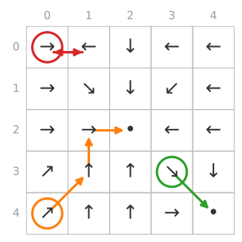
The math: following the flow
Following the arrows is the Euler method for the ODE \dot{\mathbf x} = \mathbf v(\mathbf x):
with \mathbf vbilinearly interpolated between pixel centres.
Along an exact path, \frac{d}{dt}h(\mathbf x(t)) = \nabla h \cdot \mathbf v = \|\nabla h\| > 0: h only increases, so a path can only end at a maximum of h, the source (exercise B7).
A sink is a point where nearby arrows point inwards: \mathbf v = 0 and \nabla\!\cdot\mathbf v < 0.
Noise breaks the gradient structure: where noisy arrows point at each other, a new zero of \mathbf v appears, a spurious sink. With step 1 a particle between two opposite arrows jumps back and forth; with interpolation and shorter steps it settles at the zero between them (exercise B9).
The number of steps must exceed the longest path in a cell: about the radius for a disc, half the arc length for a C (exercise B10).
Try it: following the arrows
The flow check
A mask can come out of the decoding even where the arrows are nonsense (debris, noise, a piece of a split cell). Test each mask:
Compute the arrows the mask should have: its own heat target.
Compare with the predicted arrows on its pixels: the mean squared difference, the flow error.
Above the flow threshold (default 0.4): drop the mask as implausible.
Four pixels, predicted (1, 0), (0.8, 0.6), (0, 1), (−1, 0), the mask’s own (1, 0), (1, 0), (0, 1), (1, 0): squared differences 0, 0.4, 0, 4; mean 1.1 > 0.4: dropped.
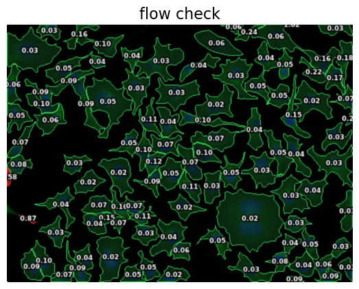
The math: loss and flow check
Training loss per image, with predicted arrows \hat{\mathbf v}, target arrows \mathbf v (scaled by 5) and cell probability \hat p (logit \hat z):
with a fixed weight \lambda: the arrows are learned by regression (squared error, \mathbf v = 0 outside cells), the cell probability by classification (binary cross-entropy, the neural-networks day).
Flow check of a mask M, with \mathbf v_M the arrows of the heat target of M alone:
\operatorname{err} = 0 for exact arrows; two unit arrows at angle \theta differ by 2 - 2\cos\theta: 0.4 means about 37° on average.
Pixels only: the check needs no ground truth, so it works on new images.
Cell diameter and rescaling
The network was trained on cells of one size: about 30 pixels across for the cell network, 17 for the nuclei network. So the image is rescaled until its cells have that size: cells of 45 px → factor 30/45 = 0.667, and a 600 × 450 image becomes 400 × 300.
Too small a diameter: the image is enlarged too much, each cell looks like a cluster → splits; and 4× the pixels for half the diameter.
Too large: cells shrink to a few pixels → misses.
The diameter can be estimated: a small regression from the network’s internal summary of the image (its “style” vector) to the cell size.
Convolutions are translation-equivariant (shift the image, the output shifts) but not scale-equivariant: a filter of fixed size sees a different pattern when the cell is twice as large.
Rescaling by s = d_\text{train} / d maps cells of diameter d to d_\text{train}, the size range the filters were trained on. Cost: the number of pixels scales with s^2.
The predicted arrows are resized back to the original image, and the particles move there; the longest path in a disc is about d/2, so the number of steps is scaled with the diameter: n = 200\, d / d_\text{train}.
Size model: the network’s style vector \mathbf s (a global average of its deepest features) predicts \log d linearly: \log \hat d = \mathbf a^\top(\mathbf s - \bar{\mathbf s}) + b, fitted on the training images.
One network for many kinds of images
Cellpose’s networks are generalists: trained on many kinds of cells and microscopes at once.
Each image is normalised by percentiles (1st → 0, 99th → 1), so brightness and exposure do not matter.
Up to two channels: the one to segment (cytoplasm, membrane) and an optional nuclear channel.
Why it generalises: the flow representation is the same for every cell shape, and many different images teach the network what “a cell” is beyond one dataset.
Where it still fails: images unlike any in training. Stained tissue has dark nuclei on a bright background; the nuclei network expects bright nuclei: inverted, F1 0.87; not inverted, F1 0.
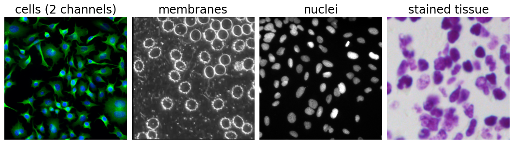
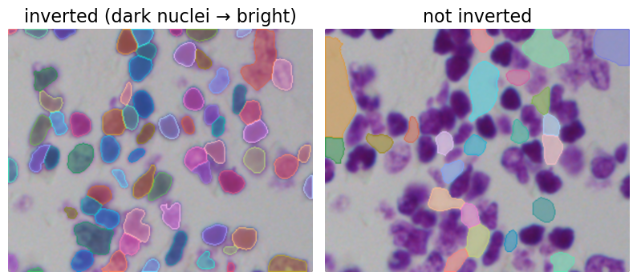
Images: Cellpose demo images (BSD-3-Clause); BBBC039 and the 2018 Data Science Bowl (BBBC038), CC0.
Failures by construction
Cause
Result
noisy arrows
extra sinks: splits (often dropped by the flow check)
touching cells with one smooth field
one sink: merge
too few steps
particles not yet arrived: masks shrink or break up
dim cells below the probability threshold
misses
wrong diameter
splits (too small) or misses (too large)
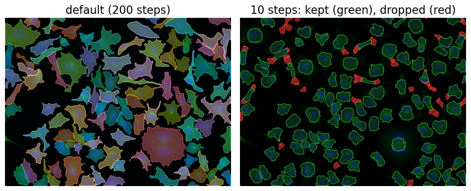
Only 10 steps on the cells: 164 sinks instead of 105, the flow check drops 59 of 160 masks, and the 101 kept are smaller (median diameter 24.5 instead of 29.1 px).
Try it: Cellpose in the browser
Newer versions
The flow representation and the decoding stay the same in later versions; the network around them changes.
Image restoration in front (denoising, deblurring) for noisy images.
The latest version replaces the U-Net encoder by the large pretrained image encoder of promptable segmentation (the SAM unit, two units on) and no longer needs a diameter: it was trained to handle cells of very different sizes.
Too large for this site: about 620 MB of weights even at half precision, against 13 MB for the U-Net.
Summary
Target: heat spread inside each cell from a source; the arrows point uphill and bend with the cell.
Network: a U-Net that predicts two arrow components and a cell probability per pixel.
Decoding: every cell pixel follows the arrows for a fixed number of steps; pixels that meet at the same sink are one cell.
Flow check: a mask whose arrows differ from its own target arrows (mean squared difference above 0.4) is dropped.
Diameter: the image is rescaled so that cells have the training size; a factor of about 2 off is tolerated, more is not.
Failures: noisy arrows split, shared fields merge, too few steps shrink, wrong polarity or size fails.